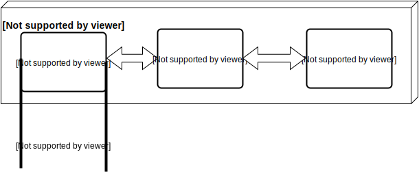
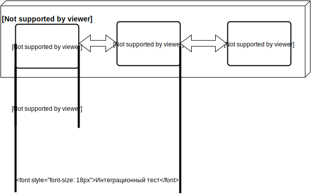
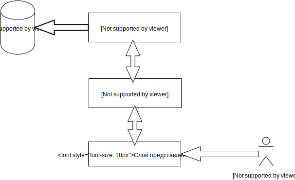
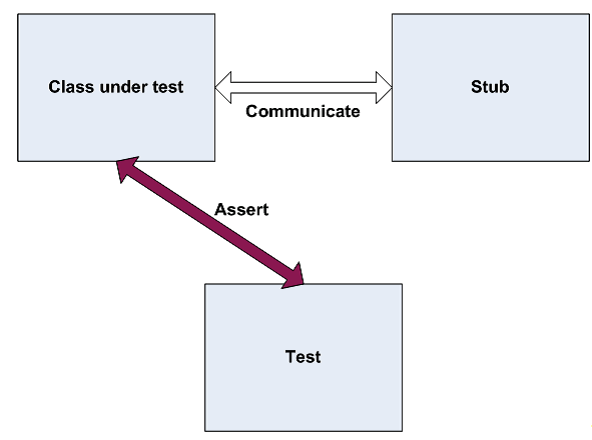
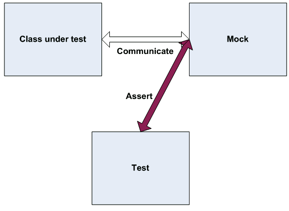

Unit-тестирование: когда, зачем, как
План
- о тестировании
- unit-тестирование
- junit: возможности и пример
- подмена объектов в тестах
- тест-дизайн
- разработка управляемая тестами
- практика
Тестирование и ПО
- сборка/компиляция проекта
- тестирование разработчиком реализации
- тестирование вручную
Тестирование вручную
- довольно дорого
- бывают ошибки
Авто тестирование
- не бесплатно
- программы тестируют другие программы
- минимум ошибок
Модульное (unit) тестирование

Интеграционное тестирование

Функциональное тестирование

Пирамида

Пирамида

Unit тестирование
package com.unittesting;
public class Calculator {
public long multiply(long a, long b){
return a * b;
}
}
Первый unit-тест
package com.unittesting;
public class CalculatorMainTest {
public static void main(String args[]){
Calculator calculator = new Calculator();
long result = calculator.multiply(2L, 2L);
long expected = 4;
if(result!=4){
System.out.println("Test failed. Expected: "
+expected+" result: "+result);
}
}
}
JUnit тест
package com.unittesting;
import static org.junit.Assert.*;
import org.junit.Test;
public class CalculatorTest {
@Test
public void testMultiply() {
assertEqual(new Calculator().multiply(2L, 2L), 4L);
}
}
Возможности junit
- все необходимые проверки (assert'ы)
- возможности подготовки теста
- интеграция в IDE
- интеграция в системы сборки
Архитектура приложения
Зависимости при тестировании
package com.transaction.test.dao;
public interface AccountDAO {
long getAccountBalance(long accountId);
}package com.transaction.test.dao;
public interface TransactionDAO {
void saveTransaction(long accountId1, long accountId2, long amount);
}public void makeTransfer(long accountId1, long accountId2, long amount){
if(accountId1<=0 || accountId2<=0)
throw new IllegalArgumentException("Wrong account");
if(amount<=0)
throw new IllegalArgumentException("amount can’t be negative");
long balance = accountDAO.getAccountBalance(accountId1);
if(balance-amount<=0)
throw new UnsupportedOperationException("credit not available");
}
transactionDAO.saveTransaction(accountId1, accountId2, amount);
}
Ненастоящие объекты
- Stub - имитация поведения
- Mock - контроль при обращении
Ненастоящие объекты: stub
Ненастоящие объекты: mock
Test driven development

Тесты:
- экономят время
- проверяют больше
- фиксируют требования
- приводят к гибкому коду
Практическая часть
- создание теста в Eclipse